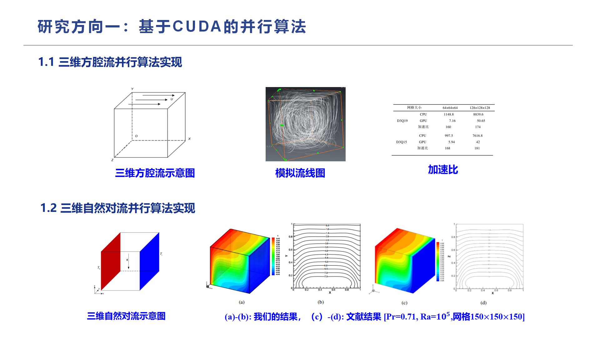
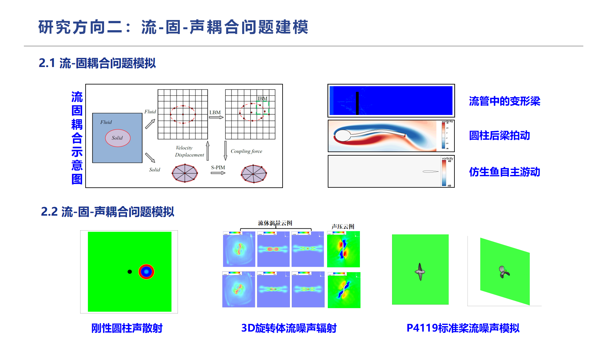
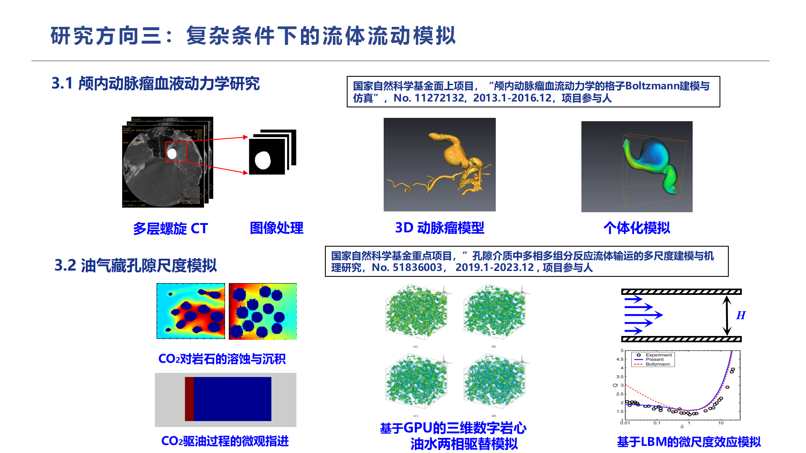
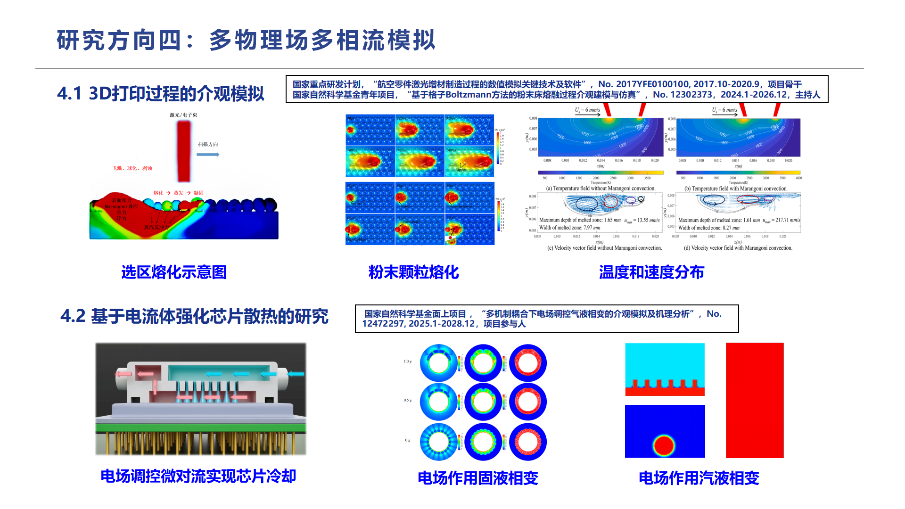
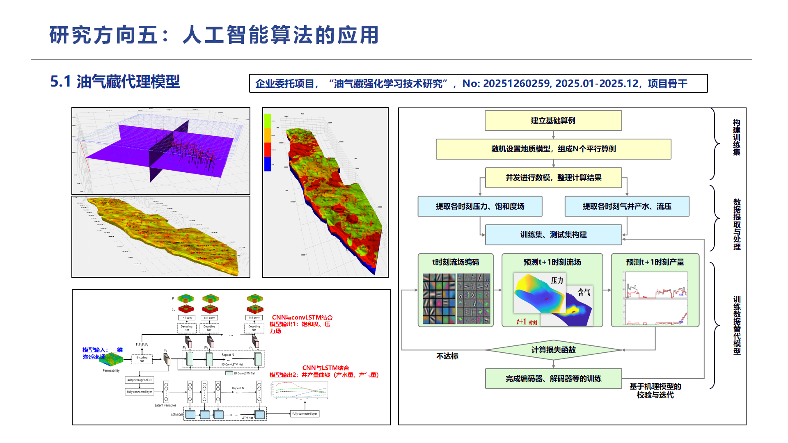
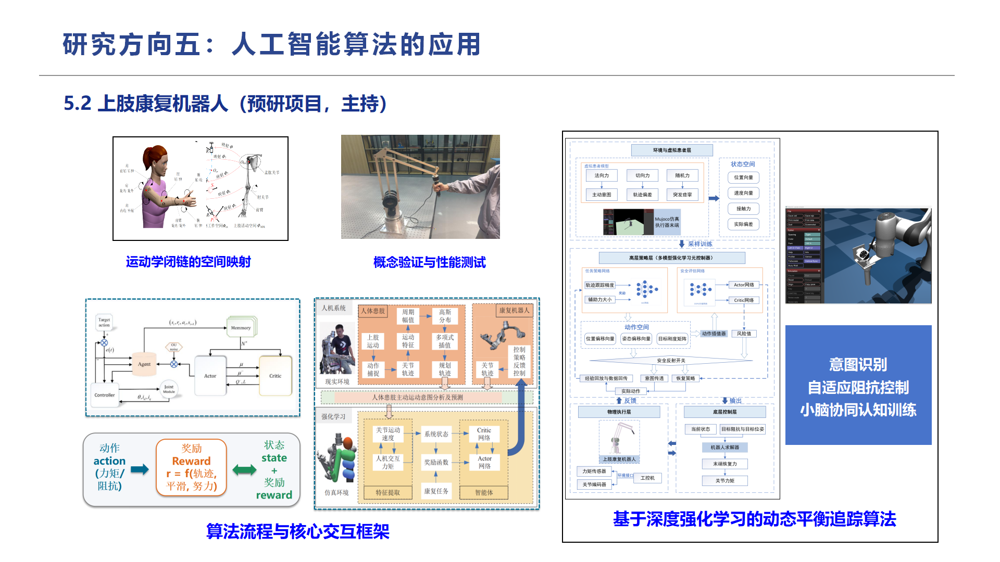

My research primarily focuses on the Lattice Boltzmann Method (LBM) and its applications in complex flows and multi-physics coupling problems. The work is built upon mesoscopic modeling and high-performance numerical computing, with attention to complex boundaries, multiphase/multicomponent systems, fluid-structure-acoustic coupling, biomedical flows, pore-scale transport in oil and gas reservoirs, and AI-assisted modeling. These efforts serve application scenarios in aerospace, energy and power, biomedical engineering, and intelligent equipment.
From a holistic perspective, the research主线 can be summarized as: using LBM as the core numerical method, GPU parallel computing and AI algorithms as essential tools, to establish stable, efficient, and scalable numerical simulation and prediction models for complex engineering problems.
I. CUDA-Based High-Performance Parallel Algorithms
Complex three-dimensional flow problems usually involve large mesh sizes, numerous time steps, and high computational costs. To address this, I have conducted research on CUDA-based parallel algorithms, mapping the local evolution, collision-streaming, and boundary handling processes of LBM onto GPU architectures to improve the computational efficiency of large-scale 3D flow simulations.
Related work includes:
- Parallel implementation for 3D lid-driven cavity flow: building a GPU-accelerated solver for the classical 3D cavity problem, analyzing streamline structures, velocity fields, and speedup ratios;
- Parallel implementation for 3D natural convection: establishing a parallel model for thermally buoyancy-driven flows and validating against benchmark results.
The goal of this direction is to enhance computational efficiency for complex flow simulations, providing high-performance computing support for subsequent multi-physics, multiphase, and large-scale engineering problems.

II. Fluid-Structure-Acoustic Coupling Simulations
Fluid-structure interactions are widespread in engineering and natural systems, e.g., vibrating elastic beams, bio-inspired fish swimming, rotating machinery noise, and propeller flow noise. In this direction, I focus on the coupling mechanisms among flow fields, structural motion, and acoustic fields, conducting numerical studies on fluid-structure coupling and fluid-structure-acoustic coupling.
For fluid-structure interaction, main study objects include:
- Deformable beams in a flow channel;
- Flexible beam flapping behind a cylinder;
- Self-propelled bio-inspired fish swimming.
For fluid-structure-acoustic coupling, further attention is given to flow-induced noise and sound propagation, with study objects including:
- Acoustic scattering from a rigid cylinder;
- Flow noise radiation from 3D rotating bodies;
- Flow noise simulation for the P4119 standard propeller.
The core of this direction is to establish a unified numerical framework integrating flow field, structural dynamics, and acoustic propagation, providing theoretical and computational foundations for underwater vehicles, rotating machinery, bio-inspired propulsion, and low-noise design.

III. Flow Simulations under Complex Conditions
Complex fluid flows often involve realistic geometric boundaries, multi-scale structures, and multi-physics coupling. In this context, I have carried out research on biomedical flows and pore-scale flows in oil and gas reservoirs.
3.1 Hemodynamics in Intracranial Aneurysms
For hemodynamics in complex vascular geometries such as intracranial aneurysms, the research pipeline includes medical image acquisition, image processing, 3D aneurysm reconstruction, and patient-specific numerical simulations. By analyzing local flow structures, wall shear stress, and hemodynamic characteristics, this work provides computational references for aneurysm risk assessment and personalized diagnosis and treatment.
Supporting project:
- National Natural Science Foundation of China (NSFC) General Program “Lattice Boltzmann modeling and simulation of hemodynamics in intracranial aneurysms” (No. 11272132, 2013.1–2016.12), participant.
3.2 Pore-Scale Simulation of Oil and Gas Reservoirs
In reservoir development, pore-scale multiphase/multicomponent transport, CO₂ displacement, rock dissolution and deposition, etc., have significant impacts on macroscopic recovery. I have participated in GPU-based 3D digital core simulations, oil-water two-phase displacement, microscopic fingering during CO₂ flooding, and micro-scale effect modeling.
Supporting project:
- NSFC Key Program “Multi-scale modeling and mechanism study of multiphase multicomponent reactive fluid transport in porous media” (No. 51836003, 2019.1–2023.12), participant.

IV. Multi-Physics Multiphase Flow Modeling
Multiphase flow problems often involve phase interface evolution, heat and mass transfer, phase change, external field control, and complex boundary effects, which are fundamental in energy, materials, and electronic thermal management. My work mainly addresses mesoscopic modeling of 3D printing processes and electrohydrodynamic-enhanced chip cooling.
4.1 Mesoscopic Modeling of 3D Printing Processes
In laser additive manufacturing and powder bed fusion, powder particle melting, melt pool flow, temperature evolution, and interface deformation are highly coupled. LBM-based mesoscopic methods can effectively describe powder melting, temperature/velocity distributions, and local flow structures, providing numerical tools for understanding heat and mass transfer mechanisms in additive manufacturing.
Supporting projects:
- National Key R&D Program “Key technologies and software for numerical simulation of laser additive manufacturing of aviation parts” (No. 2017YFE0100100, 2017.10–2020.9), key member;
- NSFC Young Scientists Fund “Mesoscopic modeling and simulation of powder bed fusion processes based on lattice Boltzmann method” (No. 12302373, 2024.1–2026.12), PI.
4.2 Electrohydrodynamic-Enhanced Chip Cooling
As chip power density increases, conventional cooling methods face significant challenges. Electric-field-mediated micro-convection offers new possibilities for chip cooling enhancement. My work focuses on electric-field-controlled micro-convection, solid-liquid phase change, and vapor-liquid phase change, studying the effects of external electric fields on flow structures, phase interface evolution, and heat transfer efficiency.
Supporting project:
- NSFC General Program “Mesoscopic simulation and mechanism analysis of electric-field-regulated vapor-liquid phase change under multi-mechanism coupling” (No. 12472297, 2025.1–2028.12), participant.

V. Applications of Artificial Intelligence Algorithms
In complex engineering simulations, high-fidelity numerical models are often computationally expensive, making them difficult to use directly for rapid prediction, real-time optimization, and intelligent decision-making. Therefore, I also explore the integration of AI algorithms with physics-based models, investigating data-driven methods for complex flow prediction and intelligent control.
5.1 Surrogate Models for Oil and Gas Reservoirs
To address the time-consuming nature of reservoir simulations, the research idea is to use geological parameters (e.g., 3D permeability fields) as inputs, and employ deep learning architectures such as CNN, LSTM, and ConvLSTM to build surrogate models that predict saturation fields, pressure fields, and well production curves.
Basic workflow:
- Establish base cases with random geological models to generate multiple parallel cases;
- Run concurrent numerical simulations, extracting pressure, saturation, and production data at each time step;
- Construct training and testing sets, training encoders, decoders, and time-series prediction networks;
- Validate and iteratively refine predictions using physics-based models.
Supporting project:
- Industry-commissioned project “Reinforcement learning techniques for oil and gas reservoirs” (No. 20251260259, 2025.01–2025.12), key member.

5.2 Upper-Limb Rehabilitation Robot
In the area of intelligent rehabilitation equipment, I have conducted a preliminary project on upper-limb rehabilitation robots, focusing on deep reinforcement learning-based dynamic balance tracking, motion intention recognition, adaptive impedance control, and cerebellar synergistic cognitive training.
Key research aspects include:
- Establishing spatial mapping relationships for kinematic closed chains;
- Designing dynamic balance tracking and adaptive control algorithms;
- Building intention recognition and human-robot interaction frameworks;
- Conducting proof-of-concept and performance testing.
This research addresses the needs for active participation, compliant interaction, and personalized control in rehabilitation training, exploring the potential of AI algorithms in intelligent rehabilitation robotics.
